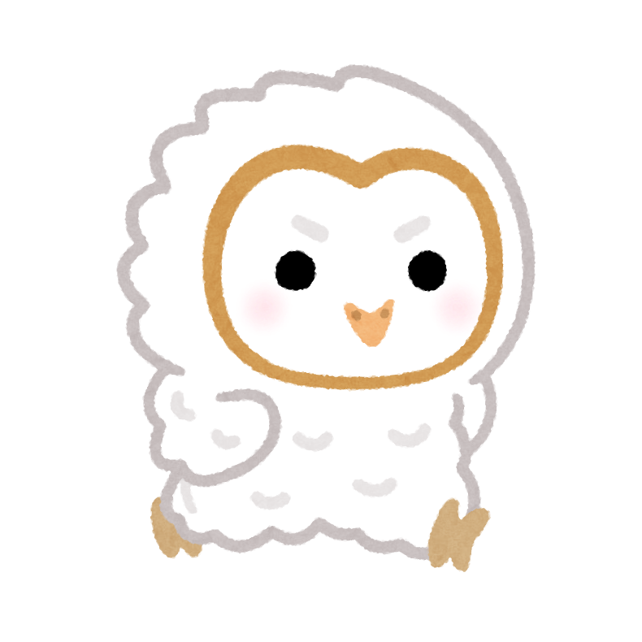

私の好きなもの

好きすぎてエスプレッソマシンを買ってしまうほど．．．
（一人暮らしの時はインテリア）
コーヒー
カフェで飲むのも家で入れるのもどっちも好き！好きすぎてエスプレッソマシンを買ってしまうほど．．．
（一人暮らしの時はインテリア）
サッカー観戦
海外サッカーが好き黄金時代のバルサが人生で一番好きだけど，
今はプレミアばっか見ている
ゲーム
はまったら16時間ぶっ通しや，3日で睡眠時間3時間になったこともあるほど
なつみにうるさいと度々怒られる
（本気でうるさくて実家では寝れないとの苦情あり）
お酒
日本酒，焼酎以外なら基本飲める最近は克服したハイボールにはまっている
お酒は飲んでも飲まれるな！！
魚（捌く）
いつからはまったかわからないが，なんか捌きたくなってしまう
一番捌くのは鯛！
鯛って骨から出しも取れて捨てるとこがないので最高！！
うどん
3食うどんでもいいってくらい大好き！香川に行ったときには1日で5件（7~8杯分）食べた
丸亀製麵では死ぬほどネギを入れる
音楽
音楽は世界を救うと思っている（本気で）いいと思うアーティストが多すぎて
一番好きなアーティストを聞かれるといつも困る
フェスは1年に3回くらいの信頼度です！
動物
実家に世界一かわいいマンチカンのいずみちゃんがいる！人見知りすぎて触るたび，嫌ってされて逃げられる
旅行
お金がないから日本しか旅行してないけど本当は海外も行きたい
地味にあと8県で日本制覇。
冬は北陸，夏は四国がおすすめ！！
ポテト
居酒屋行ったら絶対ポテトを頼む！！同棲始めて冷凍庫が大きくなったから
冷凍ポテト常備してる♡
写真
※好きだからと言って上手いというわけではありません最近はフィルムカメラ一筋！
現像する時までちゃんと取れてるかわからない
このドキドキがやめられない
パン
一生パン派ハード系が好きなのでフランスパンにはうるさいよ
おすすめのパン屋があったら教えてください
気が向いたら行きます！